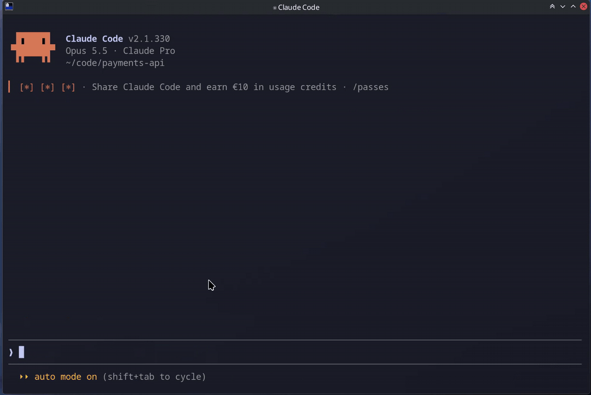

Claude Code that remembers your project.
memorable stores the decisions, conventions, and facts Claude learns as it works, and hands it the right ones before it answers.
curl -fsSL https://raw.githubusercontent.com/constantine-kostikas/memorable/main/install.sh | shThen run memorable setup. macOS or Linux, with Docker and Ollama. The memory store and embeddings stay on your machine.
Unedited output of memorable hook prompt-submit against a demo project.
In a real session
Asked about storing money, Claude calls memorable, finds the team's decision, and answers with the reason behind it.

See and edit what Claude remembers
memorable ui opens a local workspace. Search shows why each result ranked where it did. Edit in Markdown, compare any two versions, and review flagged or stale memories.
- Hybrid search
- Local embeddings fused with Postgres full-text and trigram matching, boosted for the current project, pinned, and frequently used memories.
- Selective recall
- Top memories at session start, and up to three pointers per prompt. Below 70% relevance, recall stays silent.
- Scoped by folder
- Separate contexts such as work and personal, each its own schema, with per-project memories inside.
- Safe to let Claude write
- Secrets are rejected, likely prompt injections are quarantined for your approval, and every change is versioned.
- Verified updates
memorable updatechecks a GPG signature before it replaces the binary.

How it compares
Claude Code's built-in memory needs no setup and suits small projects. claude-mem captures whole sessions automatically. memorable is for curated facts you want found reliably across many projects.
| Aspect | Built-in memory | claude-mem | memorable |
|---|---|---|---|
| What is stored | Markdown notes per project | Compressed summaries of session activity | Individual facts, decisions, and preferences |
| How it is found | An index file loaded at session start; Claude reads the files | An index of relevant observations at session start, plus keyword and semantic search tools | Hybrid search, and per-prompt recall with a relevance score |
| Storage | Files in ~/.claude | SQLite, with Chroma for semantic search | Postgres with pgvector |
| Scope | Per project | Per project | Contexts by folder, projects within them, and a shared profile |
| History and safety | Plain files you can edit | <private> tags keep content out of storage | Versioned, soft deletes, secret scan, injection quarantine |
| Setup | None | npx installer or plugin, with Node, Bun, and uv | One binary and memorable setup, with Docker and Ollama |
Install
- Install Docker and Ollama.
- Install memorable with
curl -fsSL https://raw.githubusercontent.com/constantine-kostikas/memorable/main/install.sh | sh, orbrew install --cask constantine-kostikas/tap/memorableon macOS. - Run
memorable setup. It shows every change as a diff and asks before applying it. - Start a new Claude Code session.